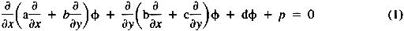
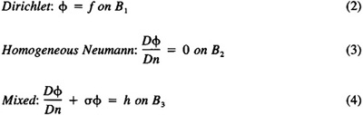
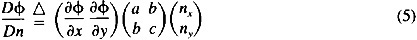
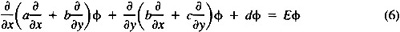
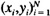
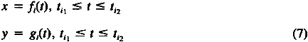

by Abraham Kandel
CRC Press, CRC Press LLC
ISBN: 084934297x Pub Date: 11/01/91
|
|
Fuzzy Expert Systems
by Abraham Kandel CRC Press, CRC Press LLC ISBN: 084934297x Pub Date: 11/01/91 |
| Previous | Table of Contents | Next |
Menahem Friedman
Abraham Kandel
In this chapter we present a fuzzy (“soft”) expert system operating as a fuzzy intelligent differential equation solver (FIDES). The main purpose of this project is to furnish a finite element program users with an expert system that will release them from the necessity of providing the finite element triangular mesh by themselves. Creating such a mesh could be quite complicated and tiresome even for an expert, pending on the complexity of the problem domain of solution.
Users with almost no knowledge of finite element theory and techniques are often prevented from using an intelligent finite element programming package, due to their unwillingness and occasionally inability to prepare and cope with a large and complex input data. Even an expert is not exactly thrilled having to manually form a finite element mesh for domains other than rectangular, circle, etc. In addition to spending their valuable time on putting the mesh together, users are quite often capable of inserting some subtle errors. Such errors in a large and complicated grid could backfire a little or a lot on the final solution. If that solution is luckily completely out of range, the error could (not easily) be spotted and removed. Otherwise, it could stay there forever, inflicting small but damaging deviations from the numerical solution.
FIDES was developed in order to eliminate the necessity of creating the grid and to encourage engineers and scientists to consider a finite element approach more often, particularly when it is advantageous to their specific problems. It is also aimed at significantly saving on the user’s time, even at the expense of somewhat adding to the computing costs. In the era of supercomputers such as CRAY YMP, it is the expert’s time that should have a clear priority.
FIDES users have to specify only the most essential basic data that uniquely define their problem. This involves interactively inserting the domain boundary — given as an ordered list of points, the boundary conditions, and the differential equation coefficients. This relatively small set of α numerical characters is necessary and sufficient for defining the problem. FIDES then provides a suitable finite element triangular mesh and sets a finite element package — MANFEP1 — to work. The final result is a numerical solution to the user’s problem. The system is based on the conceptual structure of fuzzy expert systems9 which is closely related to the theory of fuzzy sets as developed by Zadeh.7 For a detailed exposition of fuzzy set theory and its applications, the reader is referred to.5,6
MANFEP, which is a two-dimensional finite element programming package designed for solving second order self-adjoint elliptic partial differential equations, can treat linear and various types of nonlinear problems with any combination of Dirichlet, Neumann, and mixed boundary conditions. Its efficiency and applicability have been broadly demonstrated,2-4 and the package is naturally a major component of FIDES.
A detailed formulation of the problem is given in Section II. FIDES structure is discussed in Section III. and its applicability is demonstrated in Section IV.
The general problem treated by FIDES is given by the 2-D elliptic partial differential equation:

defined over a general bounded domain D with a boundary B. The equation coefficients are in C1(D) and satisfy ac - b2 > 0 over D.
The boundary is composed of three sections B1, B2, B3 on which the most commonly used boundary conditions are given:

where

f, σ, h are continuous functions specified on B1, B3, respectively, and nx, ny, — the x,y components of the outward normal to the boundary.
FIDES (via MANFEP) can also solve the general eigenvalue problem defined by:

with homogeneous Dirichlet or Neumann boundary conditions, and boundary value problems given by Equations 1—4 where dφ is replaced by a nonlinear term of Thomas-Fermi type.8
The user supplies the input data, first the coefficients a, b, c, d, p, f, σ, h which could be either constants or functions. The boundary is then defined as an ordered list of pairs of numbers  that creates a closed polygon. Each polygon side that is not a straight segment must be followed by a pair of functions:

that specify the boundary between the vertices i, i + 1. This portion of the boundary is eventually replaced by an approximating polygon, so that the whole boundary B is finally represented by one closed polygon.
For each vertex i, the user is expected to specify the boundary condition that must hold between vertices i and i + 1. However, if no boundary condition is inserted, a “natural boundary condition” (homogeneous Neumann) will automatically hold.1
Once the input is inserted, FIDES automatically replaces the domain by a triangular finite element mesh and sets MANFEP to solve Equations 1—4.
| Previous | Table of Contents | Next |